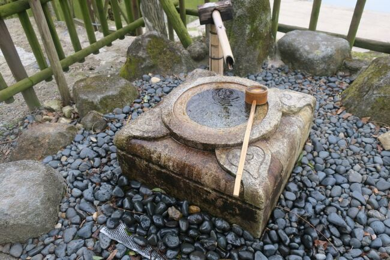

吃音・どもりで悩んでいる時間を減らしましょう

吃音・どもりで悩んでいる時間について
吃音・どもりで悩んでいる時間はどれくらいでしょうか。10代20代の頃は起きている間はずっと悩んでいた記憶があります。 「この悩んでいる時間は、他の人は別の事で悩んでいるんだろうか」「別の事で悩んでいるなら、何で悩んでいるんだろうか」ともんもんとしていました。 落ち込む時間や泣いている時間も合計すると、どもり関連でいったいどれくらいの時間を費やしてきたのか、と正直悔やんでしまいます。 もちろん悩む時間は無駄では無く次のステップへ進む大事な時間なんですが、使い過ぎかなと思ったら切替も大事だと思います。吃音・どもりで悩んでいる時間を別の事に使う
悩んでいる時間は無駄では無いとは思いますが、さすがに今思えば「もったいなかったかなぁ」と思います。 「悩む」という事は、頭の中が「吃音・どもり」になっている事だと思います。 辛さを和らげるためにも、頭の中を別の物にする事も大事だと思います。 何か自分が集中できるものを見つけて、少しでも悩んでいる時間を減らす事はいい事だと思います。 「推し活」なんかは、とってもいい時間ですね。 アイドルや俳優、キャラクターの応援でもいいし、ゲーム・運動・料理など、自分が好きな事なら何でもいいと思います。 「推し活」はその後の人生にも役立つと思います。「自分が夢中になれる物」って意外と出会えないものです。 社会に出てストレスを抱えた時、老後で仕事を引退した時、「自分が夢中になれる物」を持っているのといないとでは大きな差が出てきます。 「自分が夢中になれる物」は一つでは無く複数あると、よりいいと思います。 例えば、インドア系では読書、アウトドア系ではキャンプなど、色んな経験をする事で視野も広がり、その結果「吃音・どもり」で悩む時間も減ってくるのでは、と思います。  次の記事 吃音・どもりで疲れたら休んでもいいスポンサーリンク